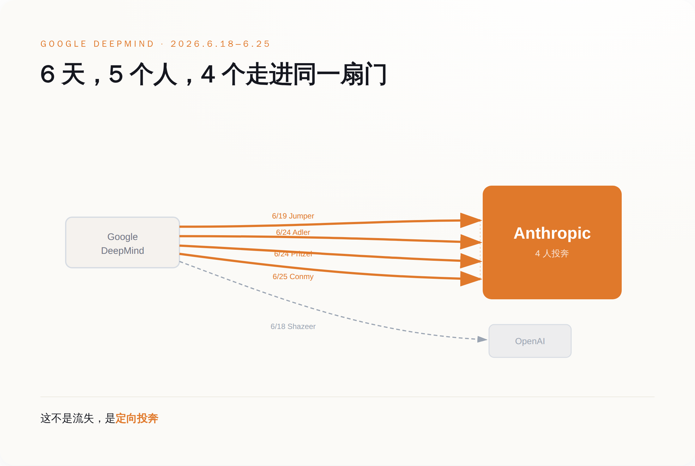
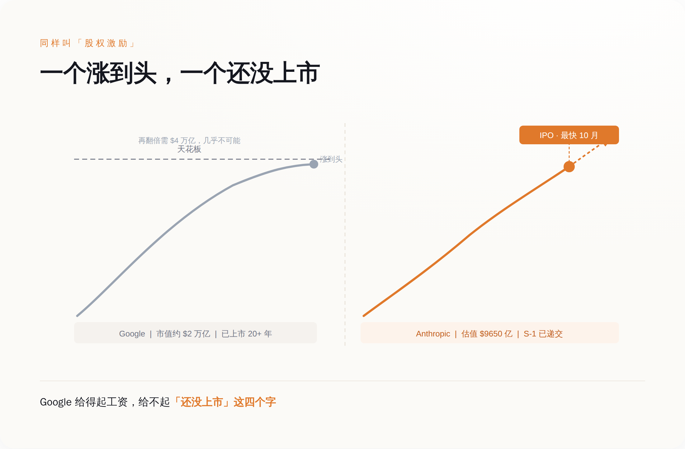

4 个人，同一周，去了同一家公司
先把事实钉死，不然容易被人说我在拱火。
6 月 18 日，Noam Shazeer 离开 Google，去 OpenAI。这人是 2017 年那篇《Attention Is All You Need》的作者之一，Transformer 的爹之一，在 Google 是工程副总裁，联合带 Gemini。2024 年 Google 花了大约 27 亿美元，才把他从他自己创办的 Character.AI 买回来。买回来不到两年，走了。 6 月 19 日，第二天，John Jumper 离开 Google，去 Anthropic。他是 AlphaFold 的核心作者，2024 年跟 Hassabis 一起拿了诺贝尔化学奖。注意，是跟现任老板一起拿的奖，转头去了对家。如果到这里你觉得“就走俩明星，至于吗”，那是因为故事还没讲完。
6 月 24 日到 25 日，又有三个人陆续被曝出走，无一例外，全去 Anthropic。一个做 Google 的 AI 编程工具，一个做预训练，还有一个是 Gemini 2.5 的贡献者、做 AI 安全——最后这位干脆自己在 X 上发帖认领了。数一下。5 个人，7 天，4 个去了 Anthropic，1 个去了 OpenAI。
这就不是“人才流失”了。人才流失是水漏了，四面八方往下渗。这是 4 个人朝着同一个方向，排着队，往同一个门里走。
定向的。

Google 给的工资，大概率是全行业最高的
讲到这儿，正常人的第一反应是：肯定是 Google 给少了呗，被人加钱挖走了。
这个反应，错得很彻底。
Google 缺钱吗？2024 年它光是为了把 Shazeer 一个人买回来，就付了约 27 亿美元的技术授权费。2026 年，Alphabet 计划的 AI 资本开支是大约 1900 亿美元——这个数字比绝大多数国家一年的 GDP 都高。
Google 缺算力吗？它有自研的 TPU，有全球最深的数据中心家底。Hassabis 在戛纳那番话里专门点了一句：我们的研究团队是所有实验室里最大、最广的。这话是凡尔赛，但也是事实。
Google 缺平台、缺品牌、缺顶级问题吗？都不缺。AlphaFold 拿诺奖是在这儿拿的，Transformer 是在这儿造的，全世界最聪明的一批脑子，本来就长在这棵树上。
所以你看，钱、算力、平台、声望，这四样 Google 一样不缺，甚至样样领先。
可它还是在一周里，眼睁睁看着 4 个人朝同一个对手走。
于是只剩一个解释：如果一家公司什么都给得起，人还是要走，那它一定有一样东西，无论花多少钱都给不出来。
它缺的那张牌，叫“还没上市”
我们来看看那 4 个人奔过去的 Anthropic，手里到底攥着什么。
2026 年 5 月 28 日，Anthropic 官宣完成 Series H 融资：一轮融了 650 亿美元，投后估值 9650 亿美元，红杉等机构领投。官方说，年化收入跑道（run-rate revenue）已经越过 470 亿美元。
6 月 1 日，Anthropic 秘密递交了 IPO 申请（S-1），目标是 2026 年秋天、最快 10 月在纳斯达克上市。它的老对手 OpenAI，估值约 8520 亿美元，也在同一条队里排着。
现在把两边摆一起看。
你去 Google，拿到的是一家市值约 2 万亿美元、已经上市二十多年的公司的股票。这股票好不好？好，稳，年年分红，但它的天花板就在那儿——它要再翻一倍，得变成 4 万亿美元的公司，这事不是不可能，是这辈子大概率轮不到因为你加班加出来。
你去 Anthropic，拿到的是一家 9650 亿美元、下个月就要上市的公司的、还没上市的股权。就算按现在这个估值进去，它从私募市场迈进公开市场、再带着 470 亿美元的年化收入往上长的空间，也比一只早被市场磨平了预期的成熟股要厚——更何况越早进去，那张纸越值钱，先到的人吃的就是这一口。
这两样东西，名字都叫“股权激励”，但根本不是一个物种。
一个是已经涨到头的钱，一个是还没上市、还能翻倍的票。

而这四个字，恰恰是一个顶级研究员在 2026 年最想要的东西。因为他清楚，模型这东西迟早趋同，benchmark 你追我赶，真正一次性、不可逆、改变人生量级的财富机会，就卡在某家公司“从未上市到上市”的那一下。错过了，就没了。
这是一场上市公司在规则上就打不了的仗
你可能会说：那 Google 也去发期权啊，多发点不就行了？
发不了。因为期权的价值，来自“还没上市”这个状态本身。Google 二十多年前就把这个状态用掉了。它现在能给你的，是一家成熟公司的成熟股票——稳定、可预期、没有那一跳。它越成功、越大、越稳，那一跳就越不可能再来。
这就是反常识的地方：让 Google 留不住人的，恰恰是它“已经成功”这件事。
当然，得给反方留位置。Hassabis 在戛纳的反驳不是没道理：单个模型的迭代是系统工程，不是哪一个研究员拍脑袋决定的，走几个人，Gemini 明天不会崩。Gemini 的市场份额这一年确实从个位数涨到了 27% 以上，产品没掉链子。市场那 2250 亿美元的单日蒸发里，多少是基本面，多少是情绪，这事谁也说不清——不同口径给的数字本身就从 2250 亿到 2700 亿不等，本来就带着市场的过激反应。反过来，对家那 9650 亿美元的估值你也大可以说是泡沫，赌它的人未必都能全身而退。
所以我不说“走了几个人 Google 就完了”，那是蠢话。
我说的是，这一周像一次压力测试，测出了一个 Google 花多少钱都补不上的结构性漏洞：它能在工资单上赢，却在“未上市股权”这张牌上，连牌桌都上不了。
这事什么时候算我错？很简单：等 Anthropic 和 OpenAI 真上了市，期权红利锁定、那一跳兑现完了，如果到时候人才不再单向往外跑，甚至开始回流 Google，那就说明我把“上市与否”看得太重了。这个，我们 12 到 18 个月后回来对账。
但在那之前，如果你最近也在看 offer，记住一件事：别光盯着工资数字谁高。去看那家公司的股票——它是已经涨到头了，还是，还没上市。
能开出最高工资的公司，往往恰恰开不出最值钱的那张纸。